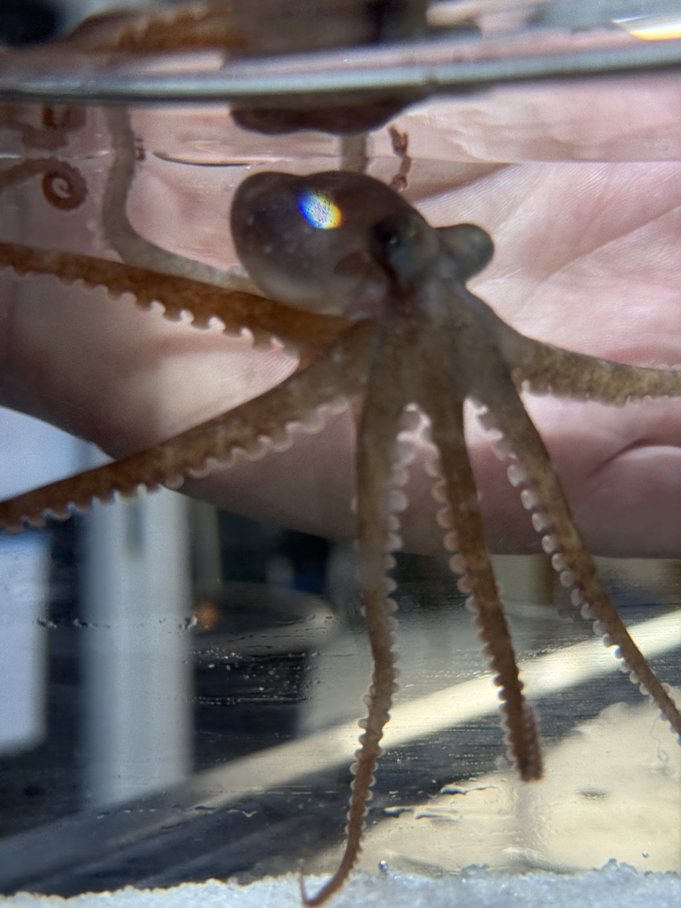
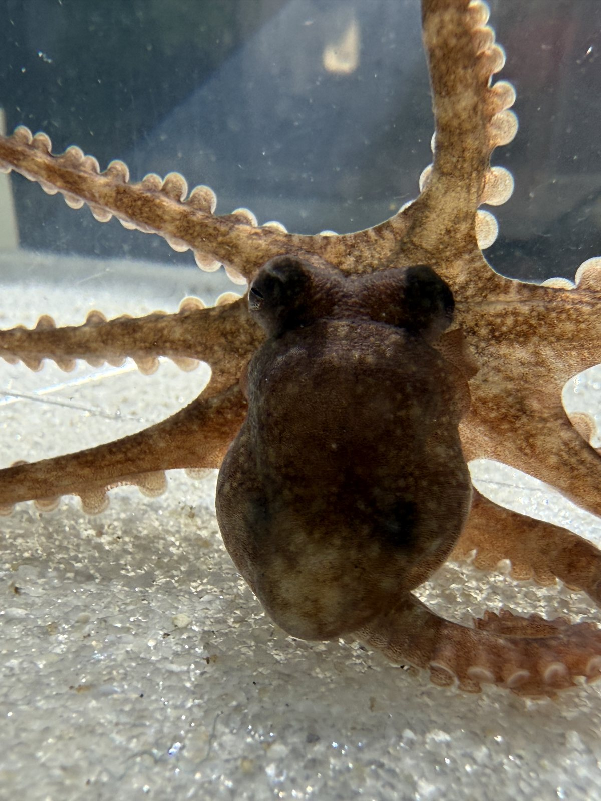

Teaching
My teaching philosophy is rooted in the belief that students learn best when they are active participants in discovery. I build inclusive, student-centered courses that diversify assessment, structure peer collaboration, and make scientific practices visible and accessible.
Philosophy
My commitment to contextual learning stems from my own academic path. During my first years of college I often questioned whether I belonged in biology; large lectures made it hard to connect abstract pathways to anything meaningful, and without that context I retained little beyond the exam. My perspective changed during a quarter at Bodega Marine Laboratory, where we designed and carried out original experiments in marine physiology. They were imperfect, but moving from question to data to interpretation rekindled my curiosity and shaped my belief that inquiry-driven learning can change how students see themselves as scientists.
It is also why I treat belonging as something a course design either builds or erodes. Students decide early whether science is for them, partly from evidence we control: whether the work is legible, whether early mistakes are survivable, and whether their questions get taken seriously. I find introductory and non-majors courses just as exciting as upper-division and graduate teaching, because they are the opportunity to ignite curiosity and demystify science.
Evidence-based practice
I rely on a small set of strategies with good empirical support, and I use them consistently, not occasionally.
- I open a unit with a question, not a definition. Students meeting membrane potential for the first time begin with why a neuron in a warming tide pool starts to misfire, not with a list of channel types, and class time goes to prediction and interpretation: think-pair-share on a recording trace, small-group data analysis, and quick polls that show me what the room actually believes before I move on.
- I pair frequent low-stakes formative assessment with comprehensive summative assessment. At Daytona State College, teaching Anatomy and Physiology I and II, I used multimodal assessments to build technical skill and confidence, especially for neurodiverse and multilingual students, pairing exams with low-stakes quizzes, scaffolded labs, and collaborative problem-solving. The students most likely to withdraw are those who discover in week ten that they misunderstood week three; frequent small checks surface that while it is still easy to repair.
- I apply Universal Design principles across every course. Clear rubrics and checklists shared before the assignment, predictable course organization, accessible slides and captioned media, multiple ways to engage with material, and several valid modes of demonstrating understanding, including written, oral, and visual formats. Building asynchronous courses for Oregon State University Ecampus has made me quicker at producing materials that are accessible by default instead of on request.
- I put authentic data in students' hands early. In Molecular Genetics at San Francisco State University, students analyzed authentic datasets, engaged in gene-editing case studies, and designed experiments connecting lecture material to open questions in the field. At Flagler College, environmental science students sampled biodiversity in local ecosystems. Calcium-imaging recordings and transcriptomic datasets from my own lab are classroom material: quantify excitability under a defined perturbation, then propose the follow-up experiment.
- I am explicit about how scientific work gets done. Figure reading, peer review, the norms of authorship, and brief metacognitive reflections so students can evaluate their study strategies and adjust early. Students who did not grow up around scientists are otherwise guessing at rules everyone else seems to know already.
Courses taught
Instructor of record at four institutions, across two-year, four-year, and graduate settings, in person and fully online. Five courses across two institutions in fall 2026.
| Year | Course | Notes |
|---|---|---|
| 2026 | BB 314 Cell and Molecular Biology Oregon State University Ecampus | Instructor of record. Fully asynchronous online course for a national and nontraditional student population. |
| 2026 | BB 350 Elementary Biochemistry Oregon State University Ecampus | Instructor of record. Fully asynchronous online course. |
| 2026 | Conservation Biology San Francisco State University | Instructor of record. Undergraduate majors course. |
| 2026 | Advances in Physiology San Francisco State University | Instructor of record. Graduate seminar. |
| 2026 | BIOL 231 Advising for Success in the Biology Major San Francisco State University | Instructor of record. Degree planning and career pathways; students complete UNC's Project READY equity, inclusiveness, and anti-racism curriculum with weekly graded reflections. |
| 2023 | BIOL 357 Molecular Genetics San Francisco State University | Instructor of record. Upper-division majors course linking molecular mechanisms to current research and societal issues: authentic datasets, gene-editing case studies, student-designed experiments. |
| 2019–20 | Human Anatomy & Physiology I and II Daytona State College | Instructor of record. Gateway health-science courses; multimodal assessment for neurodiverse and multilingual learners. |
| 2019–20 | NAS 107 Environmental Science; BIO 111 General Biology Flagler College | Instructor of record. Field-based biodiversity sampling, sustainability assessments, and ecotours for non-majors. |
| 2012 | Marine Genomics; Developmental Biology Friday Harbor Laboratories, University of Washington | Graduate instructor. Hands-on genomics and developmental biology laboratory modules. |
| 2009–10 | Introductory Biology Laboratory Cal Poly, San Luis Obispo | Teaching associate. Inquiry-based laboratory sections. |
During my Ph.D., based at a remote marine laboratory with few formal teaching opportunities, I built my own: I mentored NSF REU students through experimental design and scientific communication, guest lectured at several universities, designed and taught laboratory workshops at symposia, led bioethics courses for REU cohorts, and created outreach programs in biodiversity, genetics, and marine science for underserved K-12 students and adult learners across Florida.
Prepared to teach
Introductory and core. Introductory cell and molecular biology; introductory organismal biology; general biology for majors and non-majors; human anatomy and physiology; genetics.
Intermediate and upper division. Cell biology; neurobiology with laboratory; comparative and animal physiology; invertebrate biology; biochemistry; molecular genetics; developmental biology.
Advanced, research, and new courses. Genomics and bioinformatics; undergraduate and honors research; a course-embedded research experience in comparative neurobiology built on multiplex in situ hybridization and calcium imaging in intact invertebrate preparations; an advanced laboratory in comparative circuit physiology in which students record from invertebrate motor circuits and measure how a rhythm changes with temperature or water chemistry, with analysis scripted and version-controlled from the first week.
Mentoring and undergraduate research
My mentoring emphasizes independent scientific thinking and steady skill building. I structure research experiences as a progression from guided analyses to independent projects with clear paths to authorship or presentation: regular one-on-one meetings, near-peer mentoring in the lab, and collaborative figure and manuscript preparation. I see mentorship as a technical and intellectual partnership that also acknowledges students' lives outside the lab. A student who stops coming to lab in week five usually has a reason that has nothing to do with biology, and finding out is part of the job.
- Crook laboratory, San Francisco State University, 2022 to present. Trained master's and undergraduate students in molecular biology, microscopy, image quantification, and scientific communication. Mentees are co-authors on two of my papers, including three students on the intramuscular nerve cord manuscript. Master's thesis committee member.
- Moroz laboratory NSF REU cohorts, University of Florida, 2013 to 2018. Designed projects sized to a ten-week residency; led bioethics courses and symposium workshops. Mentee Rayanna Laux received the NSF REU Poster Presentation Award in 2015.
- Academic advising. Instructor of record for BIOL 231, San Francisco State University's biology major-advising course, in which students build degree plans and career pathways.


A student who has recorded from a neuron they can name, under a condition they chose themselves, arrives at graduate or medical school already knowing how science is done.
Curriculum development and professional development
I have developed course-embedded undergraduate research experiences and modular laboratory units linking foundational concepts to advanced neuroscience topics, and designed online-ready materials, mixed-media content, asynchronous discussion protocols, and reflective assessments, that I have since carried back into in-person courses. Teaching is an iterative practice, so I continue to refine my approaches through professional development:
- 2026UNC Project READY: Reimagining Equity and Access for Diverse Youth. Completed the curriculum and taught it as instructor of record for BIOL 231 at San Francisco State University.
- 2025Teaching Writing: Meeting the Moment, SFSU Center for Equity and Excellence in Teaching and Learning
- 2025BREWMOR: Data-Driven Student Assessment and Reflection in Undergraduate Research
- 2025MicroBREW: Assessment of Undergraduate Experiential Learning in Biology Labs
- 2024BREWMOR: Integrating Bioinformatics into the Undergraduate Classroom
- 2023BigBREW: Integrating Primary Literature into the Undergraduate Classroom
- 2020Advancing Learning Webinar: Moving Instruction Online